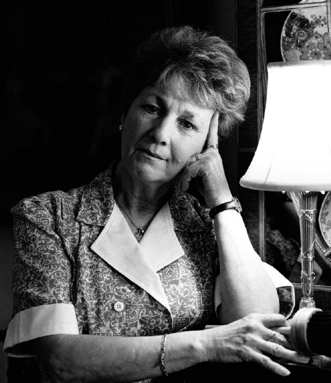

Tôi vẫn chưa thể nói về chuyện đó
– Wendy Elsasser, Thợ cắm hoa, 1985–2007, vẫn đang làm việc trong Nhà Trắng ngày 11 tháng 9 năm 2001.
“Pierce, đến văn phòng nhanh lên. Ông chủ bị bắn rồi”, một nhân viên mật vụ sợ hãi quát lên với Nelson Pierce khi ông đang rảo bước qua các cánh cổng Nhà Trắng để bắt đầu ca trực của mình trưa ngày 22 tháng 11 năm 1963.
Hơn năm thập niên trước, Pierce nhớ rõ từng giây từng phút của cái ngày năm 1963 đó. Vừa qua khỏi cổng, ông đã chạy vội đến tòa nhà và nhảy bổ vào Phòng Quản lý, nơi một nhóm nhân viên đang kinh hãi xúm quanh cái tivi.
Không như người dân cả nước, Pierce không có thời gian thương tiếc tổng thống bởi ông có việc phải làm. Như hầu hết các nhân viên trong dinh, hôm đó ông không thể hiện nhiều cảm xúc. Tất cả các nhân viên Nhà Trắng tiếp tục làm việc như cái máy, Quản lý Mỹ thuật Jim Ketchum nói. “Hầu hết chúng tôi đều dốc sức làm tiếp việc của mình”.
Là người phụ trách quản lý tòa nhà trong cái ngày khủng khiếp đó, Pierce được một nhân viên mật vụ gọi đến từ Bệnh viện Parkland ở Dallas để chính thức khẳng định là tổng thống đã chết.
Pierce phải lèo lái con thuyền trong một hoàn cảnh chưa từng xảy ra trước đây. Chưa có ai trong các tổng thống sau này bị ám sát, và từ trước đến nay cũng chưa từng có một cảnh tàn khốc về một sự kiện nào được chiếu đi chiếu lại trên tivi.
Đó là khởi đầu của một tuần dài suy kiệt cảm xúc. Pierce bước vào cổng Nhà Trắng ngày thứ Sáu và ở không rời khỏi đó cho đến tối thứ Tư tuần sau. Có quá nhiều việc phải làm. Việc đầu tiên ông làm trong trạng thái vẫn còn choáng váng là gọi điện cho các kỹ sư và ra lệnh cho họ kéo lá cờ trên nóc Nhà Trắng xuống lưng chừng cột cờ. Ông chỉ để mình suy sụp đúng một lần, đó là khi nhìn thấy lá cờ đang được kéo xuống. Sau khi trấn tĩnh lại, ông gọi điện cho Trung tâm Kiểm soát của Cục Quản lý Công sản (General Services Administration) để báo cho tất cả các sứ quán Mỹ và các tàu ngoài khơi biết phải treo cờ rủ.
Không quá mười phút sau khi rời Dallas, thư ký riêng của Phu nhân Kennedy, Mary Gallagher gọi điện cho Pierce từ chuyên cơ Air Force One để nói với ông rằng bà Jackie muốn đám tang chồng bà được tổ chức giống đám tang Tổng thống Lincoln tối đa. Pierce không biết điều này sẽ dẫn đến chuyện gì nhưng ông lập tức bắt tay vào việc. “Chúng tôi không được huấn luyện cho những tình huống như thế này. Đây là một tình huống ta tự nhiên rơi vào, vì thế chúng tôi chỉ làm theo những gì đệ nhất phu nhân muốn”, ông nói. ông lập tức liên hệ với Phòng Quản lý Mỹ thuật và đến lượt phòng này làm việc với Thư viện Quốc hội (Library of Congress) để tìm hiểu xem có cách nào sao chép lại nghi thức quàn linh cữu và đám tang của Tổng thống Lincoln một cách tốt nhất.
Quản lý Mỹ thuật Jim Ketchum tìm thấy một bản in khắc cũ thể hiện hình ảnh Phòng Đông treo đầy khăn đen ở đám tang Tổng thống Lincoln. Để tái tạo ấn tượng này, West gọi cho Lawrence Arata, người phụ trách màn thảm ở Nhà Trắng và được Arata đề nghị sử dụng vải cambric đen, một loại vải đen mỏng dùng lót mặt dưới ghế ngồi để che phần lò xo bên trong ghế. Vì chuyện này mà vài ngày trước Arata đã đặt mua một cây vải mới dài 100 thước Anh (khoảng 90 mét).
Arata và vợ ông nhanh chóng bắt tay vào việc treo số vải này lên theo hướng dẫn của ông Sargent Shriver, em rể tổng thống, người được ông Robert Kennedy nhờ giám sát khâu chuẩn bị tang lễ. Vợ chồng Arata treo vải đen lên đèn trần, ô cửa và cửa sổ. Với sự trợ giúp của các đồng nghiệp, họ làm việc suốt từ tối hôm trước cho đến khi thi hài tổng thống được đưa về sáng sớm hôm sau.
“Nhiều người tưởng đó là lụa nhưng đó chỉ là vải cambric đen trơn, phu nhân Kennedy muốn đám tang chồng thật bình thường như đám tang Tổng thống Lincoln chứ không hào nhoáng”, Arata nói. “Tôi ghim vải cambric lên các tấm màn cửa và cố che kín lớp vải màn lại để trông như chúng được đặt may”.
Trong tâm trạng đau buồn, Preston Bruce đưa bạn bè và người nhà tổng thống vào để họ bắt đầu chuẩn bị lễ tang cho tổng thống. Ông phụ treo vải đen ở khu tầng chính của Nhà Trắng theo lời căn dặn của đệ nhất phu nhân, ông cũng cùng với Quản lý tổ phục vụ Charles Ficklin xếp những dãy nến dài – loại nến cao và thuôn – ở gần bục đỡ quan tài tổng thống trong Phòng Đông. Từ lúc Bruce đến Nhà Trắng lúc 2 giờ 22 của trưa ngày 22 tháng 11 cho đến khi chiếc xe tang ngừng ở phía dưới lối vào Cửa Bắc sau 4 giờ sáng hôm sau, Bruce nói “trong đầu tôi chỉ có một suy nghĩ duy nhất, đó là chờ phu nhân Kennedy về. Tôi muốn có mặt ở đó khi bà ấy quay về Nhà Trắng”.
Tổng Quản lý J. B. West đang ở nhà thì nghe được tin dữ trên radio. Ông vội vàng chạy đến văn phòng. Trong hồi ký của mình, ông liệt kê những giờ sau: ông nói các nhân viên phục vụ chuẩn bị cà phê và chỉ thị cho các nhân viên làm phòng chuẩn bị sẵn phòng ốc để đón khách: “Hành động nhỏ, ý nghĩa nhỏ nhưng là dấu hiệu cho thấy chúng tôi vẫn phải tiếp tục làm việc”.
“Lúc đầu chúng tôi nghe nói thi hài tổng thống sẽ về đến Nhà Trắng khoảng 10 giờ tối. Nhưng đến 10 giờ, chúng tôi nhận được một cuộc gọi nói rằng họ không biết chừng nào mới đưa thi hài về được. Mãi đến khoảng 4 giờ 25 sáng, thi hài tổng thống mới về đến Nhà Trắng”, Pierce nói, mặt thoáng buồn, “chúng tôi thức suốt đêm và suốt ngày hôm sau”.
Pierce giúp các nhân viên phục vụ bố trí phòng ở cho các thành viên gia đình Kennedy trong tòa nhà. Suốt bốn đêm sau đó, ông và các nhân viên quản lý khác phải ngủ trên giường xếp dưới tầng hầm. Ở dưới đó có một khu được họ sử dụng để thay tuxedo trước khi phục vụ cho quốc yến, trong đó có ít nhất một phòng tắm bồn và một phòng tắm sen dùng chung cho mọi người.
Khi Pierce lần đầu nhìn thấy Jackie sáng sớm ngày 23 tháng 11, người ông gần như đông cứng lại. “Khi phu nhân Kennedy, Ted và Robert từ khúc quanh hành lang tiến đến chỗ thang máy, tôi tự nhủ không biết sẽ nói gì với bà ấy. Khi bà vừa đến, ánh mắt chúng tôi chạm nhau và có một cái gì đó giữa chúng tôi mà tôi chưa từng cảm nhận với ai khác khiến tôi hiểu rằng tôi không cần nói bất cứ điều gì”, ông nhớ lại, nước mắt rưng rưng khi nhìn thấy chiếc áo khoác thấm đẫm máu chồng của bà. Lúc đó, vị đệ nhất phu nhân đau khổ ấy chỉ mới 34 tuổi. “Chúng tôi đã mất một người bạn, một người bạn thân thiết”, Pierce nói, nhớ lại tâm trạng đau buồn của các nhân viên trong cái ngày định mệnh. Thư ký xã hội Letitia Baldrige nhớ mình được Robert Kennedy nhờ chọn quan tài cho tổng thống. Bà chọn một cỗ quan tài có giá trung bình bởi nó sẽ luôn bị che khuất dưới lá quốc kỳ Mỹ.
“Hàng trăm người lặng lẽ và buồn bã đi quanh các hành lang”, bà hồi tưởng. “Những hành lang đó đã từng rất vui vẻ, náo nhiệt và ồn ào. Giờ đây, ai nấy đều di chuyển chậm chạp, đầu cúi gầm, và khi họ cất tiếng nói, giọng họ thì thào như thể sợ cảm xúc bùng lên”.
Trong vòng mười lăm tiếng, cho tới lúc thi hài tổng thống được đưa về Nhà Trắng, các gia nhân đã thu xếp xong việc đặt cỗ quan tài lên cùng chiếc bục đặt linh cữu Tổng thống Lincoln gần một trăm năm trước. Thi hài Tổng thống Kennedy được trả về sau nhiều giờ nằm ở Bệnh viện Hải quân Bethesda, nơi tử thi tổng thống được khám nghiệm trong lúc bà Jackie đi qua đi lại bên ngoài hành lang với điếu thuốc trên môi. Đại diện từng quân chủng khiêng quan tài lên cầu thang ra Cửa Bắc. Cha John Kuhn của nhà thờ St. Matthew đọc một bài kinh cầu nguyện ngắn, chỉ sau khi cỗ quan tài phủ cờ tổ quốc đã an vị trong Phòng Đông, đệ nhất phu nhân mới rời khỏi thi hài chồng. Bà đặt vào quan tài một lá thư viết cho chồng, một cặp khuy măng–sét vàng mà bà đã tặng ông, một con dấu tổng thống khắc từ răng cá voi, và một bức thư ngắn của Caroline và John–John viết cho cha.
Với Phu nhân Kennedy, sự ra đi của tổng thống càng đau buồn hơn khi hai vợ chồng chỉ vừa mới gần gũi trở lại sau khi đứa con bé bỏng của họ, Patrick Bouvier Kennedy, qua đời ngày 9 tháng 8 năm 1963, tức chưa đầy bốn tháng trước khi tổng thống bị ám sát. Khoảng mười ngày trước khi Patrick sinh non, Jackie viết thư cho Trưởng bộ phận Phòng Ann Lincoln để nhờ bà ra ngoài mua một ít móc áo em bé. Lincoln chần chừ chưa đi vội vì nghĩ rằng còn mấy tuần nữa đứa bé mới chào đời.
Cậu bé sinh sớm năm tuần rưỡi và mất sau khi sinh hai ngày. “Cả căn phòng đã được sửa sang lại, và ngay khi biết tin Patrick mất, chúng tôi phải chạy ngay đến đó để đem mọi thứ ra ngoài đưa đi chỗ khác”, bà nhớ lại. Họ không muốn căn phòng này gợi cho tổng thống và đệ nhất phu nhân nhớ đến sự mất mát to lớn của họ khi trở về nhà. Ông J. B. West lập tức gọi điện cho Phòng Mộc sau khi nghe tin Patrick mất và ra lệnh cho họ tống khứ hết thảm, rèm cửa và cũi em bé trong căn phòng trang trí hai màu xanh trắng đó đi. Giờ đây, Jackie lại phải chịu một sự mất mát khác làm thay đổi hoàn toàn cuộc sống của bà.
Bill Cliber đến Nhà Trắng làm thợ điện đúng ngay năm đó. Ông giúp phủ vải đen lên các chùm đèn trần, và khi Jackie Kennedy đến xem lại thi hài của chồng, ông lặng lẽ đi xuống cuối phòng để cho bà chút riêng tư.
“Chúng tôi biết lúc nào nên biến mất”, ông nói. Và đó chính là lúc các gia nhân ý thức về nhu cầu được ở riêng của đệ nhất phu nhân.
Trong suốt hai mươi bốn tiếng, thi hài tổng thống được gia đình và bạn bè đến viếng trong Phòng Đông. Đến ngày thứ Bảy, sau một lễ cầu nguyện nhỏ, bà Jackie tiến đến chỗ Tổng Quản lý J. B. West và vòng tay ôm lấy ông. “Tội nghiệp ông West”, bà thì thầm vào tai ông.
“Tôi không nói được câu nào. Đó là tất cả những gì tôi có thể làm để có thể trụ vững”, West nói. “Tôi chỉ ôm bà ấy trong giây lát”.
Biết mình và các con sẽ phải nhanh chóng rời Nhà Trắng, Jackie nhờ ông dẫn bà đến nhìn lại Phòng Bầu dục lần cuối. Thật tệ là mọi thứ trong đó đã bị dọn sạch. Các mô hình tàu thủy, sách vở và cả chiếc ghế bập bênh của tổng thống cũng đang được các gia nhân chuyển ra ngoài. “Tôi nghĩ chúng ta đang làm vướng bận mọi người”, bà thì thầm cố gắng lưu giữ từng chi tiết cuối cùng của căn phòng.
Bà đi đến Phòng Nội các ở gẩn đó và ngồi vào chiếc bàn gỗ gụ bề thế “Các con tôi, chúng là những đứa trẻ ngoan, phải không ông West?”, bà hỏi người tổng quản lý mà bà xem như bạn.
“Chắc chắn rồi”.
“Chúng không hư chứ?”
“Không đâu”.
“Ông West à, ông có thể làm bạn cả đời với tôi không?” Vị đệ nhất phu nhân mà mới chỉ một ngày trước dường như còn nắm giữ mọi thứ trong tay khẩn khoản.
Ông quá đau buồn để có thể thốt nên lời. Ông chỉ biết gật đầu. Chủ nhật đầu tiên sau ngày tổng thống bị ám sát, cỗ quan tài phủ lá quốc kỳ được cỗ xe ngựa từng chở thi hài Tổng thống Lincoln, Tổng thống Roosevelt và một người lính vô danh khác, được đưa đến khu Nhà tròn của Điện Capitol và được đặt ở đây 21 tiếng đồng hồ để mọi người đến viếng. Đám tang của ông Kennedy được sao chép giống hệt đám tang Tổng thống Lincoln, đến mức có cả một con ngựa đen không người cưỡi giống như cách đây gần 100 năm trước. Có 250.000 người đến viếng linh cữu tổng thống. Quốc tang tổng thống được tổ chức vào ngày thứ Hai, 25 tháng 11.
“Chúng tôi đứng bên ngoài lối vào Cửa Bắc. Hôm đó là một ngày yên tĩnh, những âm thanh duy nhất nghe được là tiếng lộc cộc phát ra từ các con ngựa”, Wilson Jerman, một người giúp việc lâu năm nhớ lại. “Một ngày rất buồn”.
Ngay trước đám tang, Quản lý Rex Scouten gọi ông Preston Bruce vào văn phòng. Robert Kennedy đã đợi sẵn ở đó. Ông Kennedy nói với Bruce là bà Jackie muốn ông theo đoàn người đưa tang đến Thánh đường St. Matthew. Sau đó, sẽ có một chiếc xe hơi chở ông đến nghĩa trang tham dự lễ an táng tổng thống.
Đám tang “diễn ra như trong mơ”, Bruce hồi tưởng, ông nhớ mình nhìn thấy John–John chào quan tài cha và nhớ chuyện Jackie chuẩn bị bánh, kem và đèn cầy cho bữa ăn tối của cậu bé tối hôm đó để mừng con tròn 3 tuổi.
Là người có tổ tiên là nô lệ, Bruce chưa bao giờ được đến trường. Chính vì thế, ông vô cùng sửng sốt khi thấy mình được đứng sát cạnh Tướng Charles de Gaulle và Hoàng đế Ethiopia Haile Selassie trong bộ lễ phục gắn đầy huy chương tại đám tang Tổng thống Kennedy ở Nghĩa trang Quốc gia Arlington. Họ chỉ mới là vài người quyền cao chức trọng trong số các quan chức đến Washington từ hơn 100 quốc gia để chia buồn với nước Mỹ. Đối với Bruce, Jackie Kennedy là người đã ban cho ông vinh dự cả đời khi đặt ông đứng cạnh các nguyên thủ quốc gia và khi xếp ông vào số các thành viên của gia đình tổng thống cùng những bạn bè thân thiết nhất.
JIM KETCHUM VỪA rời khỏi Phòng Bầu dục, nơi ông làm việc suốt sáng với nhóm nhân viên của viện Smithsonian. Còn gần một năm nữa mới đến cuộc bầu cử tổng thống năm 1964, vậy mà Kennedy đã lên kế hoạch cho thư viện tổng thống của mình để phòng khi ông thất cử. Tổng thống nhất quyết muốn thư viện của mình phải có một phiên bản của chiếc bàn Resolute [**] làm từ gỗ con tàu thám hiểm Bắc cực của Anh mang tên H.M.S. Resolute. Kennedy là vị tổng thống đầu tiên đặt chiếc bàn này trong Phòng Bầu dục, và chiếc bàn này trở nên nổi tiếng thế giới nhờ tấm hình chụp John–John đang thò đầu từ dưới gầm bàn trong lúc ba mình đang làm việc. Sáng hôm đó, Ketchum và đội ngũ nhân viên viện Smithsonian đến quan sát chiếc bàn mang tính biểu tượng này thật tỉ mỉ.
[**](Bàn lớn phong cách thế kỷ 19 thường được các tổng thống chọn làm bàn làm việc trong Phòng Bầu dục.)
Ketchum vừa mới quay về văn phòng mình thì đã nghe tiếng một sĩ quan cảnh sát nói chuyện ngoài hành lang: “Chúng tôi được tin từ Dallas là đoàn xe hộ tống tổng thống bị bắn trúng và chúng tôi nghĩ tổng thống đã trúng đạn”.
Ketchum và hai nhân viên khác của Phòng Quản lý Mỹ thuật vội vàng đi thang máy lên tầng ba và tìm một phòng có tivi để chạy vào xem tin tức. Không bao lâu sau, Ketchum được phu nhân Kennedy gọi điện từ Air Force One. Bà lặp lại những gì thư ký bà đã căn dặn các quản lý: bà muốn ông lục tìm các cuốn sách mô tả cách trang hoàng Phòng Đông trong đám tang của Tổng thống Lincoln.
Trời đã nhá nhem tối khi những chiếc trực thăng bắt đầu nối đuôi nhau hạ cánh xuống bãi cỏ Nhà Trắng. Nhìn lại cái ngày khủng khiếp ấy, Ketchum nói với tôi rằng ông chỉ có thể so sánh hình ảnh đó với các cảnh trong Apocalypse Now, một bộ phim quy mô lớn về chiến tranh Việt Nam công chiếu nhiều năm sau. Trên các phi cơ bay từ Căn cứ Không quân Andrews đến, có một số người đến từ Dallas và một số người khác do ông Johnson yêu cầu gặp mặt để bàn chuyện chuyển giao. Ketchum mất vài giờ đồng hồ sau đó để chuẩn bị Phòng Đông. Mãi đến sáng Chủ nhật, ông mới có thể rời Nhà Trắng để trở về căn hộ của ông ở phía bắc Virginia. Nhưng chỉ mới nghỉ ngơi được vài tiếng, ông đã nhận được một cuộc gọi của Phu nhân Kennedy. Lúc đó là khoảng 6 giờ 30 sáng thứ Hai, tức ngày tổ chức quốc tang cho tổng thống. “Bà ấy hầu như không ngủ”, ông nói. Bà ấy gọi đến chỉ để nói về một chi tiết nhỏ, điều này cho thấy bà gần như chỉ tập trung vào hình thức của lễ tang ngay cả khi đang đối diện với nỗi đau mất chồng.
“Bà ấy sẽ tiếp hầu hết quan khách đến viếng trong Phòng Đỏ, riêng với Tổng thống de Gaulle của Pháp cùng một số cá nhân thuộc hàng chức sắc cao cấp nhất thì bà ấy muốn tiếp họ ở Phòng Bầu dục Vàng, ngay phía trên Phòng Bầu dục Lam”, ông nói.
Jackie lo những vị khách này sẽ nhìn thấy bức tranh trường phái hậu ấn tượng của danh họa Pháp Paul Cezanne trong Phòng Bầu dục Vàng. “Tôi thực sự muốn có thứ gì đó đặc trưng cho nước Mỹ hơn để họ nhìn vào”, bà kiên quyết nói với Ketchum. “Ông có thể đến Nhà Trắng càng sớm càng tốt để tháo bức tranh Cezanne đó xuống được không?” Đến 8 giờ 15 sáng hôm đó, bức tranh Cezanne đã được thay bằng một bộ tranh mới khổ lớn in hình các thành phố Hoa Kỳ. “Một sự thay thế thật hoàn hảo”, Ketchum nói với giọng tự hào.
Ketchum ngạc nhiên khi thấy Tổng Quản lý J. B. West không bộc lộ nhiều cảm xúc sau vụ ám sát mặc dù ông rất thân thiết với Phu nhân Kennedy. West giải thích với Ketchum: “Tôi mới đến Nhà Trắng năm 1941 thì tháng Tư năm 1945 tổng thống của tôi [Roosevelt] qua đời. Trải nghiệm về sự ra đi của người tổng thống đầu tiên ta phục vụ ở Nhà Trắng thực sự khó chịu hơn rất nhiều so với các lần sau”.
Khi Tổng thống Kennedy mất, Ketchum nói, ông mới hiểu những gì West muốn nói. Các nhân viên luôn được trông chờ giữ bình tĩnh ở một mức độ nào đó. Khi vị đệ nhất phu nhân cam chịu không ca thán, những người khác cũng sẽ làm y như vậy. Nếu như vợ của tổng thống có thể giữ bình tĩnh thì một nhân viên quản lý mỹ thuật không biết rõ về tổng thống chắc chắn cũng phải giữ thái độ tương tự.
West rất ngạc nhiên khi thấy Phu nhân Kennedy, một người rất ghét tham gia vận động tranh cử, lại muốn tháp tùng chồng đến Dallas, nhưng rồi ông nhớ ra rằng hai vợ chồng họ đã gắn bó hơn từ lúc Patrick qua đời vào tháng 8. Sau này, Jackie nói với West rằng bà rất vui vì đã có mặt bên chồng trong giây phút cuối cùng của ông ấy: “Cứ nghĩ đến việc tôi gần như không định đi. Ồ, ông West, nếu lúc đó tôi ở nhà cưỡi ngựa đi dạo ở Wexford (ngôi nhà của họ ở Virginia) hay đang ở một nơi nào đó thì sẽ thế nào đây... Tạ ơn chúa đã để tôi đi cùng ông ấy”.
Phu nhân Kennedy thương yêu West và biết ơn sự tử tế của ông đối với bà trong khoảng thời gian u ám đó đến mức khi ông qua đời năm 1983, bà đã xin bà Nancy Reagan cho ông được an táng ở Nghĩa trang Quốc gia Arlington, mặc dù nơi đó chỉ dành cho những người theo đuổi sự nghiệp quân đội cùng gia đình họ. Vợ chồng Reagan chấp thuận.
CÔ BẢO MẪU Maud Shaw là người thông báo cái chết của tổng thống cho mấy đứa trẻ. Chỉ năm ngày nữa là đến sinh nhật thứ sáu của Caroline khi cha cô bé bị ám sát. Còn John–John lúc đó chỉ mới bước qua ba tuổi được ba ngày. Khi những chiếc trực thăng ồn ào đáp xuống Bãi cỏ phía nam, Caroline chỉ vào từng chiếc và hỏi đó có phải là chiếc trực thăng đưa ba của bé đi công tác về không. Shaw thận trọng từng lời nói: “Đã xảy ra một vụ tai nạn và bố các con đã bị bắn”, Shaw nói giọng ngập ngừng, gần như không thể kiểm soát sự đau buồn của mình. “Chúa đã đưa bố các con về thiên đàng bởi bệnh viện không thể chữa khỏi cho ông ấy”.
Shaw nói với Caroline rằng sau này bé sẽ được đoàn tụ với cha và em Patrick trên thiên đàng, nhưng từ đây đến đó, cha bé ở trên trời sẽ dõi theo bé, mẹ bé và em trai bé. Lúc này Caroline đã đủ lớn để hiểu và bật khóc.
John–John còn quá nhỏ nên Shaw chỉ cho bé đi ngủ mà không nói lời nào. Tuy nhiên, sau đó không lâu cậu bé cũng đủ hiểu để nói rằng: “Mẹ đang khóc kìa. Mẹ khóc vì bố đã ra đi”.
LÚC ĐẦU, LADY Bird Johnson nghĩ là ai đó đốt pháo. Điều này hoàn toàn phù hợp với bầu không khí lễ hội của ngày hôm đó khi những đứa trẻ không ngừng giơ tay vẫy, còn mọi người liên tục tung confetti và nhoài người ra ngoài cửa sổ cao ốc văn phòng để vẫy chào cặp vợ chồng tổng thống đẹp đôi.
Vào ngày 22 tháng 11 năm 1963 đó, xe của vợ chồng Johnson chỉ chạy cách sau xe vợ chồng Kennedy hai chiếc. Giống như cuộc sống của gia đình Kennedy, cuộc sống của họ đã bị sự kiện ngày hôm ấy thay đổi hoàn toàn.
Phu nhân Johnson không tin là tổng thống bị bắn cho đến khi xe của họ dừng lại trước bệnh viện. Bà nhìn qua xe vợ chồng Kennedy và thấy “một đống gì đó hồng hồng, giống như những cánh hoa trôi, trên băng ghế phía sau. Đó là phu nhân Kennedy đang nằm đè lên thi thể tổng thống”.
Khi Lady Bird gặp đệ nhất phu nhân bên ngoài phòng phẫu thuật, bà kinh ngạc trước dáng vẻ lẻ loi của bà ấy. “Ta cứ nghĩ một người như bà ấy sẽ luôn được che chắn bảo vệ”, bà viết trong nhật ký. Lady Bird ôm Jackie và thì thầm: “Lạy chúa, xin giúp đỡ tất cả chúng con”.
Trên chuyến bay quay về Washington với quan tài của Tổng thống Kennedy đặt trong hành lang máy bay, Lady Bird đến gặp Jackie một lần nữa. Jackie nói với Lady Bird giống như bà nói với West sau này, đó là bà rất vui vì đã ở cạnh chồng trong giây phút cuối cùng của ông. “Chuyện gì sẽ xảy ra nếu tôi không ở đó?”, bà lớn giọng tự hỏi.
Khi Lady Bird hỏi Jackie có thể nhờ ai đó giúp bà thay chiếc áo khoác đẫm máu không, Jackie từ chối “gần như quyết liệt – nếu như một người nhẹ nhàng, cao quý như bà ấy có thể được cho là có phẩm chất ấy”. Cảnh tượng đáng sợ ấy trông thật thương tâm. Quả là cú sốc lớn khi nhìn thấy “người phụ nữ hoàn hảo không chút tì vết đó trong chiếc áo đẫm máu”.
“Tôi muốn bọn chúng nhìn thấy những gì bọn chúng đã làm với Jack”, Jackie nói với Lady Bird bằng giọng thách thức. (Chiếc áo khoác màu hồng dâu là một phiên bản giống hệt với mẫu thiết kế của Chanel do một thợ may nhỏ ở Mỹ may. Đệ nhất phu nhân chọn mặc chiếc áo này để không bị chỉ trích là mặc quá nhiều quần áo hàng hiệu đắt tiền nước ngoài).
Cả nước đều đau buồn và hoảng sợ. Luci Baines Johnson, lúc đó 16 tuổi, sợ rằng tin tức mà cô nghe được qua người khác không đầy đủ và bố mẹ cô cũng bị thương. Cô đang trong giờ học tiếng Tây Ban Nha tại trường National Cathedrale ở Washington thì nghe giáo viên thông báo vụ ám sát. “Không ai đả động đến bố mẹ tôi”, cô nhớ lại. Lớp học lập tức được giải tán và Luci một mình đi ra sân trường trong trạng thái mụ mẫm. “Khi tôi nhìn lên và thấy người đàn ông quen mặt mà bên mật vụ gởi tới, một trong những cận vệ của bố tôi, tôi quay người chạy về hướng khác, như thể tôi có thể tránh được điều không thể tránh”. Nhưng dĩ nhiên là tôi không thể chạy nhanh hơn một nhân viên mật vụ. Ông ấy giữ cô lại và nói: “Tôi xin lỗi, tôi rất xin lỗi, cô Luci”. Cô đấm vào ngực ông và gào lên “Không!”. Ông ấy không hề nói tổng thống đã chết, Luci nói, “bởi đó là những lời không thể thốt ra”. Chỉ đến khi cô hỏi “Còn bố mẹ tôi thì sao?”, cô mới biết cha mẹ mình vô sự.
Đúng 99 phút sau khi Tổng thống Kennedy được tuyên bố từ trần, Phó Tổng thống Lyndon Baines Johnson tuyên thệ nhậm chức trên chuyên cơ Air Force One. Khi Johnson bước xuống máy bay tại Căn cứ Không quân Andrews, lần này là trên cương vị một tổng thống, ông nói với cánh báo chí đang chờ sẵn: “Chúng ta đang chịu một mất mát lớn không gì sánh nổi. Với tôi, đây là một bi kịch lớn của cá nhân. Tôi biết cả thế giới hiện đang chia sẻ nỗi buồn này với Phu nhân Kennedy và gia đình bà. Tôi sẽ làm hết sức mình. Đó là tất cả những gì tôi có thể làm. Tôi xin nhờ vào sự giúp đỡ của mọi người – và của Thiên chúa”.
Bóng ma của tấn thảm kịch đó đeo bám gia đình Johnson suốt những tháng đầu tiên ở Nhà Trắng. Việc họ chuyển vào đó sống càng trở nên tồi tệ hơn khi một số nhân viên trung thành với gia đình Kennedy không tin tưởng vào vị tổng thống mới, người mà họ xem như một gã côn đồ ồn ào thô lỗ. (Ngay cả Jackie Kennedy cũng gọi Johnson là “Thượng nghị sĩ nông dân” khi nhắc đến ông ở chiến dịch tranh cử).
Cuộc sống của Caroline Kennedy có thể sẽ thay đổi mãi mãi nhưng mẹ cô mong muốn sinh hoạt hằng ngày của cô bé tiếp tục kéo dài càng lâu càng tốt. Theo yêu cầu của Phu nhân Kennedy, Phu nhân Lady Bird Johnson cho phép cô bé và nhóm bạn của bé tiếp tục theo học lớp mẫu giáo tổ chức trên phòng Solarium ở tầng ba cho đến khi kết thúc học kỳ một vào giữa tháng Giêng. Mỗi sáng Caroline được thả xuống Cửa Nam và đến trưa thì được đón về. Sau đó cô bé và các bạn cùng lớp đi thang máy để lên lớp học lót sàn bằng vải sơn và trang bị sẵn bảng đen cùng các hộc đồ chơi. Các bé học sinh khác đều là con cái những người bạn lâu năm của vợ chồng tổng thống. Lớp ba lê của Caroline thỉnh thoảng vẫn tập dượt ở Bãi cỏ phía nam, nơi bọn trẻ “phấp phới như những bầy chim nhỏ trong chiếc áo hồng, váy xòe và giày ballet”, thư ký xã hội Letitia Baldrige nhớ lại.
Sau khi cha mất, Caroline không bao giờ ngừng lại ở ở tầng hai để nhìn lại căn phòng cũ của mình hoặc nhảy trên tấm bạt lò xo nữa, ông J. B. West nói. “Ngoài một vài người giúp việc giàu tình cảm ra, số còn lại đều lơ là cô bé. Giờ đây, Lynda và Luci (hai cô con gái tuổi teen của nhà Johnson) mới chính là những nàng công chúa”.
Với Nelson Pierce, được nhìn thấy Caroline mỗi ngày khiến ông thấy an ủi chứ không buồn phiền. “Chúng tôi vui mừng khi thấy con bé được học tiếp với bạn bè”, ông nói với tôi. “Dĩ nhiên là con bé còn quá nhỏ để cảm thấy nhớ cha, nhất là trong giờ học. Nó hòa vào những đứa trẻ khác và chơi đùa vui vẻ”. (Sau khi Caroline kết thúc học kỳ một, Luci và Lynda biến Solarium thành hang ổ của tuổi teen bằng cách đưa vào đó một quầy nước ngọt, chiếc tivi và hai cái máy hát).
Ngay sau vụ ám sát, an ninh Nhà Trắng được tăng cường. Phục vụ Lynwood Westray cho biết tất cả những người giúp việc trong dinh đều bị kiểm tra lý lịch lại theo quy định pháp luật. Nhân thân và gia cảnh của họ bị đào xới, bạn bè và gia đình của họ bị truy vấn. “Một hai người không đạt yêu cầu lý lịch dù trước đây đã được thông qua”, ông nói. “Sau chuyện này, họ bị buộc nghỉ việc ở đó”. Westray cho biết điện thoại của ông bị nghe lén sau khi xảy ra vụ ám sát. “Họ muốn chắc chắn rằng những người ở đó chỉ làm những gì họ cần làm”.
Cái chết của Kennedy thay đổi tiến trình lịch sử và để lại ảnh hưởng sâu xa lên những nhân viên rất mực yêu quý ông. Sự vô tư giờ đây đã hoàn toàn vắng bóng trong các hành lang của tòa hành pháp.
GẦN 40 NĂM sau, một sự kiện đau buồn kiểu khác đã làm rung chuyển Nhà Trắng. Một sáng cuối hè, dưới bầu trời xanh biếc không một áng mây, dinh tổng thống vô cùng nhộn nhịp với các hoạt động. Như hằng năm, gia đình Bush tổ chức một bữa tiệc ngoài trời để thết đãi các thành viên Quốc hội và gia đình họ. Một trăm chín mươi chiếc bàn ăn được xếp đầy Bãi cỏ phía nam. Tổng Quản lý Walter Scheib đang bàn với Tom Perini, nhà tổ chức tiệc yêu thích nhất của gia đình tổng thống đến từ Buffalo Gap, Texas, về chuyện tổ chức nấu nướng các món ăn ngoài trời theo phong cách Texas cho 1.500 khách mời, kết thúc với các món đồng quê nấu tại chỗ trên các xe chuckwagon, ớt xanh và thịt hầm bánh ngô.
Bữa tiệc barbecue trưa hôm đó được dự báo sẽ diễn ra trong tiết trời ấm áp và bầu trời quang đãng. Các cô hầu phòng đang quét dọn Phòng Nữ hoàng trên tầng hai, nơi ông George H. W. Bush và bà Barbara qua đêm ngày hôm trước. Vị cựu tổng thống và vợ đã rời Nhà Trắng lúc 7 giờ sáng để quay về trên chuyến bay sớm. Còn Tổng thống George W. Bush thì đang viếng thăm trường tiểu học Sarasota ở Florida.
Với tất cả những hoạt động nhộn nhịp diễn ra xung quanh, bà Laura Bush dường như trơ trọi trong Nhà Trắng vào buổi sáng ngày 11 tháng 9 năm 2001 đó. Vừa lặng lẽ thay đồ trong phòng ngủ ở tầng hai, bà vừa nhẩm lại bài phát biểu mà bà sẽ trình bày trước ủy ban Giáo dục ở Thượng viện sáng hôm đó. Bà thấy lo lắng khi phải đến Đồi Capitol, nơi bà sẽ tóm tắt lại cho ủy ban thượng viện về nội dung của hội nghị phát triển trẻ em lứa tuổi mầm non mà bà tổ chức hồi đầu hè.
Cả đệ nhất phu nhân lẫn các gia nhân – từ các nhân viên làm phòng, phục vụ, cắm hoa cho đến các đầu bếp đang chuẩn bị cho bữa tiệc picnic hằng năm – đều bị cuốn vào các hoạt động của một ngày bận rộn điển hình. Nhưng ngày hôm đó không hề là một ngày điển hình. “Nếu lúc đó tôi bật tivi thì có lẽ đã nghe được bản tin nhanh đầu tiên nói về chiếc máy bay đâm vào tòa Tháp Bắc (North Tower)”, bà Laura Bush nói.
Sau 9 giờ sáng vài phút, bà Laura bước lên chiếc xe đang đợi bà ở Cửa Nam để đến Tòa nhà văn phòng Thượng viện Russell, cách Nhà Trắng chưa đầy 3 km. Người cận vệ trưởng của bà cho bà biết là một chiếc máy bay đã đâm vào một tòa tháp ở Trung tâm Thương mại Thế giới. Tổng quản lý Gary Walters lúc đó đang đứng phía sau anh ta cũng mới nghe tin này lần đầu. Làm sao một chiếc máy bay lại có thể đâm vào Trung tâm Thương mại Thế giới vào một ngày quang đãng như thế này?, ông lớn tiếng tự hỏi.
“Gary, ông vào nhà bật tivi xem thử đi”, người cận vệ nói với ông.
Đoàn xe của đệ nhất phu nhân lao nhanh ra đại lộ Pennsylvania để đến Điện Capitol. Còn Walters quay trở vào trong và đến phòng mật vụ ở Tầng Trệt, ngay phía dưới thang máy của tổng thống, nơi ông biết là có một chiếc tivi. Nhưng khi nhìn thấy căn phòng đầy nghẹt người trước màn hình tivi, ông liền đi sang Phòng Quản lý. Giữa đường, ông gặp một số nhân viên trong tư dinh nên đứng lại chỉ đạo nhanh cho họ cách sắp xếp bữa tiệc ngoài trời. Lúc này ông vẫn chưa biết gì về mức độ phá hủy tòa tháp.
Khi ông về đến phòng làm việc của mình, tách biệt với Phòng Quản lý, thì thấy rất nhiều người đang bu quanh chiếc tivi. Ông bước vào đúng lúc chiếc máy bay thứ hai đâm vào tòa Tháp Nam (South Tower).
“Làm thế quái nào mà họ đưa được cảnh này lên tivi?”, ông hỏi, giọng sững sờ.
“Bởi vì đây là chiếc máy bay thứ hai”, có ai đó trả lời.
Khi Walters nhận ra sự kiện này không phải là một tai nạn riêng lẻ, ông lập tức gọi cho Catherine Fenton, thư ký xã hội của gia đình Bush. Họ quyết định hủy bữa tiệc ngoài trời. Walters quay lại Cửa Nam, nơi ông vừa tiễn Phu nhân Laura Bush đi ít phút trước. Mọi việc còn còn quá hỗn độn và chưa chắc chắn nhưng ông không thể lãng phí thêm giây phút nào.
Giống như sau khi Tổng thống Kennedy bị ám sát, các nhân viên lúc này chỉ dốc sức làm việc. Walters phối hợp với Cục Quản lý Vườn quốc gia, nơi chịu trách nhiệm chăm sóc khuôn viên Nhà Trắng, để quyết định xem ai sẽ phụ trách dẹp các bàn tiệc ngoài trời và vệ sinh các xe bếp di động.
“Vừa ra khỏi Cửa Nam, tôi đã nhìn thấy lửa khói bốc lên dữ dội ở Lầu Năm Góc”, Walters nhớ lại. Ông chợt nhận ra rằng Nhà Trắng có thể sẽ là nơi kế tiếp bị tấn công.
Mặc dù mọi người đã bắt đầu sơ tán khỏi Nhà Trắng nhưng Walters biết mình sẽ phải ở lại: “Trách nhiệm của tôi là ở Nhà Trắng”.
Công việc của ông là giúp vận hành tòa nhà bằng mọi giá, dù lúc này đây ông có cảm tưởng như mình đang ở ngay tâm điểm của cuộc tấn công. Nhưng ông lại không thể làm được gì một mình. Ông yêu cầu đơn vị sắc phục của Cơ quan Mật vụ cho phép Quản bếp Walter Scheib, đã được cho sơ tán, quay lại Nhà Trắng. Ông cũng lôi một vài nhân viên khác lại, trong đó có Tổ trưởng Tổ Điện Bill Cliber, và mặc cho các nhân viên mật vụ hò hét kêu gọi mọi người ngưng mọi thứ lại để thoát thân, ông nói với họ rằng họ cần ở lại để giúp ông dọn hết số bàn ghế ngoài trời. “Tôi được bảo là mọi người sơ tán nhưng chúng tôi có việc phải làm”, Walters nói.
Lúc này, con gái của Walter, một sinh viên trường Đại học Boston, đang theo dõi tin tức trên tivi và lo lắng cho cha sau khi nghe ai đó nói nhầm là máy bay đâm xuống Nhà Trắng thay vì Lầu Năm Góc. Walters và nhóm nhân viên của ông do quá tập trung dọn chỗ cho trực thăng tổng thống đáp xuống nên quên không gọi điện về nhà.
Bà Bea, vợ ông Cliber, lúc đó cũng đang ở nhà xem truyền hình với họ hàng. Bà lo lắng không biết chồng mình có sao không. “Cả thị trấn đều hoảng loạn”, bà nhớ lại. “Chúng tôi chỉ biết ngồi đợi”. Mãi đến 8 giờ tối hôm đó bà mới nhận được tin ông.
Trên đường đi ra đường lái xe vào dinh và nhất là trên đường trở về nơi nguy hiểm đó, Scheib không ngừng hò hét hối thúc các đồng nghiệp đang đổ ra từ Nhà Trắng rời khỏi đó càng nhanh càng tốt. Gặp các nhân viên của tổng thống và đệ nhất phu nhân chạy ra từ Cánh Tây và Cánh Đông, ông cũng la to cảnh báo họ là cảnh sát vừa thông báo có một máy bay khác đang hướng về Nhà Trắng.
“Tất cả những người làm việc cho tôi ở Cánh Đông – chủ yếu là những phụ nữ trẻ kỳ vọng vào một công việc hấp dẫn ở Nhà Trắng – được bảo là phải vứt giày cao gót mà chạy”, bà Laura Bush nhớ lại. “Cô thử tưởng tượng họ cảm thấy thế nào khi đang làm việc thì đột nhiên được báo là phải chạy”.
Walters và những người khác di dời hết 190 bàn tiệc ngoài trời, mỗi cái nặng bốn năm chục ký, ra khỏi khu vực Bãi cỏ phía nam. “Hai đầu gối tôi liên tục va vào nhau côm cốp”, Walters nói. Tin đồn sắp có những cuộc tấn công khác tiếp tục bay về nhưng chúng tôi bỏ ngoài tai. “Công việc của chúng tôi, chúng tôi phải làm”, Cliber nói.
Ngay cả lúc đó, khi thế giới tưởng như hoàn toàn đảo lộn, các nhân viên vẫn tập trung giữ cho ngôi nhà yêu quý của họ tiếp tục vận hành và không để lộ bất cứ bí mật nào. Khi một số phóng viên nhìn thấy họ cuống cuồng dọn dẹp khu vực phía Nam, họ chạy tới hỏi thăm xem có phải tổng thống sắp quay về Washington không. “Chúng tôi không nghe nói gì cả”, Cliber nói dù biết rằng mọi người làm việc này là để giúp thúc đẩy nhanh sự trở về của tổng thống.
Xe của đệ nhất phu nhân đang bon bon trên đại lộ Pennsylvania hướng về Đồi Capitol thì nghe tin chiếc máy bay thứ hai đâm vào một tòa tháp khác ở Trung tâm Thương mại Thế giới. “Cả xe im bặt. Chúng tôi ngồi chết lặng trong xe, không tin vào tai mình”, bà viết trong hồi ký. “Một chiếc máy bay còn có thể nói là tai nạn, nhưng hai chiếc thì rõ ràng là một cuộc tấn công”.
KHI BETTY FINNEY bắt đầu đến làm việc ở Nhà Trắng năm 1993, bà không có chút kinh nghiệm làm phòng nào ngoại trừ trông nom căn nhà mà bà đang sống với chồng và hai cô con gái. Chồng bà đột ngột qua đời khi bà đang làm việc trong một tiệm thịt nướng ở Myrtle Beach, South Carolina. Vì thế bà cần kiếm gấp một công việc. Như hầu hết các vị trí trong Nhà Trắng, vị trí mà bà có được là nhờ quen biết. Con gái bà quen với Tổng Quản lý Bộ phận Phòng Christine Limerick, và bà ấy đã đưa bà vào làm.
Tám năm sau ngày được tuyển vào làm, đến một ngày Betty cảm thấy lo sợ cho tính mạng của mình.
Lúc đó, bà đang quét dọn phòng Nữ hoàng ở tầng hai, nơi hai vị thân sinh tổng thống vừa qua đêm ngày 10 tháng 9. Lúc hai ông bà Bush rời Nhà Trắng ra sân bay, họ quên không tắt tivi, thế nên giờ đây Finney đang cùng vài đồng nghiệp khác kinh hoàng xúm quanh chiếc tivi và chứng kiến cảnh tòa tháp thứ hai bị đâm vào. Như rất nhiều tấn thảm kịch ảnh hưởng đến chiếc ghế tổng thống, các gia nhân tuy làm việc ở ngay nơi xảy ra câu chuyện nhưng chỉ đến khi xem tivi họ mới biết chuyện gì đang xảy ra.
“Tôi chạy đến Phòng Bầu dục Vàng và nhìn ra ngoài cửa sổ. Mặc dù từ đó không thể nhìn thấy Lầu Năm Góc nhưng tôi thấy khói bốc lên”, bà nói. “Tôi trở về Phòng Nữ hoàng và tính chạy lên lầu làm gì đó”.
Nhưng chưa lên đến tầng ba, bà đã nghe một nhân viên mật vụ hét lớn: “Ra khỏi nhà! Ra khỏi đây mau!” Vậy là, chưa lên được tầng trên, bà đã phải chạy xuống. “Tôi không biết chuyện gì đang xảy ra. Tôi không biết là họ đã bắt đầu cho mọi người sơ tán ra khỏi đó. Khi chúng tôi chạy ra ngoài thì đã thấy tất cả mọi người đang đứng ngoài đường. Tôi quả thực rất sợ. Mỗi người chạy một hướng, đâu cũng được miễn là thoát khỏi đó”.

BETTY FINNEY
Khi đến Đồi Capitol, bà Laura Bush xuống xe gặp Thượng nghị sĩ Edward Kennedy, người chủ trì ủy ban Giáo dục. Cả hai biết rằng sẽ chẳng có buổi tường trình nào ngày hôm ấy. Ông đưa bà tới văn phòng của ông.
Lạ lùng là cả đến chiếc tivi cũ kỹ nằm ở góc phòng cũng đang ra rả bản tin kinh hoàng từ New York. Thay vì nhìn vào màn hình, ông Kennedy lại đưa bà đi một vòng quanh phòng để giới thiệu những món đồ lưu niệm của gia đình ông, bao gồm cả lá thư ngắn lồng khung mà cậu em Jack của ông đã gởi mẹ ông khi còn nhỏ, trong đó có câu: “Anh Teddy béo ra”.
“Suốt thời gian đó”, đệ nhất phu nhân nói, “tôi không ngừng liếc nhìn vào màn hình tivi đang bật sáng. Gai ốc tôi bắt đầu nổi lên. Tôi chỉ muốn ra khỏi đó để tìm hiểu xem chuyện gì đang xảy ra, để giải quyết những gì tôi đang nhìn thấy, nhưng lại kẹt cứng trong hàng loạt chuyện hài mãi không chịu dứt”. Sau này bà tự hỏi không biết có phải ông Kennedy đã chứng kiến quá nhiều cảnh chết chóc trong cuộc đời nên không thể đương đầu với một thảm kịch khác hay không, nhất là khi tấn thảm kịch đó lại ở quy mô lớn đến thế.
Sau khi tuyên bố với các nhà báo rằng buổi tường trình sẽ không diễn ra và nói vài câu thể hiện sự quan tâm đến các cuộc tấn công, Phu nhân Bush tiến về phía cầu thang và ra xe quay về Nhà Trắng. Người trưởng ban mật vụ bất ngờ chặn bà và các nhân viên của bà lại và bảo họ xuống hầm. Quá lo lắng cho sự an toàn của chồng, bà cùng một người bạn là Nghị viên Judd Gregg, một đảng viên Cộng hòa thâm niên làm việc ở Ủy ban Giáo dục, vào đợi trong phòng làm việc riêng của ông ở bên dưới Điện Capitol. Họ túm tụm ở đó và gọi điện cho các con để biết chắc là chúng an toàn. Báo cáo từ khắp nơi đổ về, thực hư lẫn lộn, trong đó có một tin nói rằng Trại David bị tấn công và một tin khác cho biết có một máy bay bay vào nông trang của gia đình Bush ở Crawford, Texas.
Không lâu sau khi chiếc máy bay thứ hai đâm vào tòa Tháp Nam, Christine Limerick chạy lên phòng cất khăn ga ở tầng ba và nói các nhân viên ngưng toàn bộ công việc ở đó lại và ra khỏi Nhà Trắng. Ngay lập tức.
Bà nghe thấy tiếng chuyến bay 77 của Hãng hàng không American Airlines lao vào Lầu Năm Góc. “Nghe như một tiếng nổ lớn”, bà nhớ lại.
Đến khi quay về văn phòng, bà mới nhớ là mình không nhìn thấy cô hầu phòng Mary Arnold đâu. Bà tính quay trở lên lầu tìm cô nhưng bị nhân viên mật vụ chặn lại. Họ nói bà có hai phút để ra khỏi Nhà Trắng bởi có một máy bay đang bay đến.
“Không ai chất vấn họ khi đang trong tình trạng phong tỏa”, bà nói. Bằng cách nào đó, Arnold cũng ra được khỏi Nhà Trắng và có đủ tiền để về nhà.
Limerick nhớ mình đã rất lo lắng khi nhận ra rằng không phải ai cũng được phép sơ tán khỏi cái mục tiêu nhiều khả năng bị tấn công này. “Tôi không bao giờ quên vẻ mặt các nhân viên mật vụ khi họ được bảo phải ở lại”, bà nói.
Các nhân viên cho biết Sở mật vụ kêu tất cả mọi người đi về hướng bắc vì nghĩ rằng máy bay sẽ đến từ hướng nam, nơi đường bay đến Nhà Trắng ít bị cản trở hơn. Từ các đầu bếp, nhân viên phục vụ, cho đến các thợ mộc, nhân viên làm phòng, tất cả đều chạy túa ra ngoài thoát thân. Một số nhân viên của bếp bánh ngọt lội bộ qua cầu Arlington Memorial Bridge rồi cùng nhau băng qua bên kia sông Potomac và tập trung ở nhà một người sống gần đó nhất.
Finney cùng năm sáu đồng nghiệp của bà đến nhà một nhân viên cắm hoa trên Đồi Capitol và xúm quanh chiếc tivi trong tâm trạng hoài nghi. Tất cả bọn họ thoát thân quá nhanh đến mức không kịp lấy cả túi, ví. Tối hôm đó, bọn họ phải cuốc bộ nhiều cây số để quay về Nhà Trắng và lấy xe về nhà, nhiều người vẫn chưa hết bàng hoàng.
Một số người không kịp phát hiện chuyện này để có thể sơ tán. Một vài nhân viên phục vụ trên tầng hai và tầng ba đang bận chuẩn bị thức uống cho bữa tiệc ngoài trời – gọt vỏ chanh và cắt các khoanh chanh để cài lên thành ly – nên không biết chuyện gì xảy ra cho đến khi mọi người trong nhà đã sơ tán được gần một tiếng. Một vài kỹ sư mắc kẹt hàng giờ dưới tầng hầm và hoàn toàn không hay biết về tình hình hoảng loạn phía trên và mối nguy hiểm đang rình rập họ.
Giữa mớ hỗn loạn đó, một người phục vụ chạy xuống ngăn tủ của mình dưới tầng hầm để thay y phục trước khi lên xe máy chạy về nhà. Nhưng cánh cổng đã đóng sập lại nhốt anh ta bên trong. Anh không thể ra ngoài cho đến khi một sĩ quan mật vụ nhận ra anh và mở cổng để anh đi.
SAU 10 GIỜ sáng hôm đó một chút, vài phút trước khi tòa Tháp Nam ở Trung tâm Thương mại Thế giới đổ ập xuống và khoảng 20 phút trước khi tòa Tháp Bắc đổ theo, đệ nhất phu nhân được các nhân viên mật vụ và đội phản ứng khẩn cấp mặc đồ đen mang súng đến đón ở văn phòng Nghị viên Gregg. “LÙI LẠI!” Họ quát lên với các nhân viên Đồi Capitol để mở đường đưa đệ nhất phu nhân chạy ra chiếc xe đang đợi sẵn. Cũng khoảng thời điểm đó, chuyến bay 93 của hãng United Airlines rơi xuống một cánh đồng gần Shanksville, Pennsylvania, khi một nhóm hành khách dũng cảm cố giành giật quyền điều khiển máy bay với bọn khủng bố. Nếu họ không phản ứng, chiếc máy bay đó hẳn sẽ lao thẳng đến Điện Capitol hay Nhà Trắng. Nhiều nhân viên làm việc trong Nhà Trắng rất biết ơn các hành khách trên máy bay đã cứu mạng họ.
Nhiều cuộc tranh cãi nổ ra xung quanh việc sẽ đưa đệ nhất phu nhân đi đâu trong quãng thời gian bấn loạn đó. Cuối cùng Cơ quan Mật vụ quyết định đưa bà đến tổng hành dinh của họ, cách Nhà Trắng vài dãy nhà. Suốt nhiều giờ liền, bà ngồi trong căn phòng hội nghị không cửa sổ dưới tầng hầm, mắt dán vào những hình ảnh lặp đi lặp lại của tòa tháp đôi đang đổ sụp xuống trên cuộn phim video.
Tất cả đường dây điện thoại ngày hôm đó đều bị kẹt cứng do người nhà các nhân viên liên tục gọi đến để đảm bảo người thân của họ được an toàn. Ngay cả tổng thống cũng gặp khó khăn khi gọi cho vợ từ chuyên cơ Air Force One sau khi máy bay cất cánh từ Florida. Mãi đến gần 12 giờ trưa, sau ba lần điện thoại không thành công, vợ chồng Tổng thống Bush mới kết nối được với nhau. Bà cho ông biết là bà đã đến chỗ các con và họ hiện đã an toàn.
Trong lúc đó, cả chục nhân viên vẫn đang mặc đồng phục tụ tập ở Quảng trường Lafayette đối diện Nhà Trắng, phía bên kia đại lộ Pennsylvania. Bếp trưởng John Moeller mô tả hậu quả của cuộc tấn công Lầu Năm Góc như sau: “Tôi nhìn thấy những cột khói lớn đen nghịt bay cuồn cuộn lên trời – hôm đó là một ngày đẹp trời. Những cuộn khói cứ thế bay lên ngút trời. Cả đời tôi chưa từng thấy vụ nổ nào lớn đến thế”. Cuối cùng, một nhóm nhân viên quyết định đi bộ đến khách sạn Capital Hilton gần đó để tắm rửa, gọi điện thoại và theo dõi diễn biến trên tivi.
Khu phố thương mại nhộn nhịp trên đại lộ Connecticut gần đó cũng đang náo loạn. Lo sợ bị kẹt trong cuộc tấn công, nhiều người bỏ xe chạy tán loạn trên đường. “Tất cả mọi người đều như điên loạn”, Walter Scheib nhớ lại. “Tôi nhớ mình đi ngang một chiếc xe BMW 700 bỏ lại giữa đại lộ Connecticut, cửa xe mở tung và máy vẫn nổ nhưng không có ai trong xe”.
Laura Bush không nhìn thấy tất cả cảnh này. Sau khi ngồi hàng giờ trong căn phòng hội nghị không cửa sổ, cuối cùng bà được đưa đến Trung tâm Hoạt động Khẩn cấp nằm bên dưới Nhà Trắng. Phó Tổng thống Dick Cheney và các nhân viên cấp cao khác đã tụ tập ở đó từ sáng. Để đến được Trung tâm chỉ huy xây cho Tổng thống Franklin Roosevelt trong Thế chiến thứ hai này, phải đi qua hàng loạt hành lang chưa hoàn thiện dưới lòng đất, nơi nhiều đường ống thòng xuống từ trên trần nhà. Bà sẽ phải chờ ở đó để được đoàn tụ với chồng.
Trong Phòng Hoa bên dưới Cửa Bắc, Bob Scanlan đang chỉnh lại lần cuối những bình hoa dùng để trang hoàng các bàn tiệc ngoài trời thì được một người bạn gọi đến cho ông biết tin. Sửng sốt, ông tháo chạy đến Trung tâm mua sắm Freedom Plaza cách Nhà Trắng vài dãy nhà.
Trong lúc đang loanh quanh ở đó cùng vài đồng nghiệp, ông nghe tiếng chuyến bay 77 của American Airlines đâm vào Lầu Năm Góc. “Chúng tôi quyết định không ở lại đó”, ông nói. “Chúng tôi như mất phương hướng”, ông cùng một đồng nghiệp đi bộ hơn ba cây số để về nhà họ ở Đồi Capitol.
SAU KHI GIÚP di dời tất cả các bàn tiệc ngoài trời, Scheib và một nhóm gia nhân vào bếp và túc trực ở đó từ 2 giờ trưa đến 9 giờ tối để phục vụ ăn uống (đa số các món ăn đã được chuẩn bị trước cho bữa tiệc barbecue) cho các nhân viên mật vụ, vệ binh quốc gia, cảnh sát D.C, cùng các nhân viên ở lại Nhà Trắng. Phần đồ ăn còn dư được ông gởi tới đội cứu viện ở Lầu Năm Góc. “Chỉ có bốn gia nhân để phục vụ trên 500 phần ăn cho các nhân viên bên trong và xung quanh Nhà Trắng”, Walters nói.
Khi được cảm ơn về bữa ăn, Scheib nói: “Ông làm sao giữ cho những chuyện bên ngoài chỉ ở bên ngoài thôi, được chứ?”
Sau khi dọn quang bãi cỏ, Cliber cùng một vài người khác tính ra khỏi Nhà Trắng nhưng mọi cánh cửa thoát nạn đều bị khóa kín. Do có một chiếc máy bay được phát hiện đang bay trên đầu họ nên các nhân viên mật vụ ra lệnh cho mọi người chạy xuống hầm trú ẩn, một hành lang kéo dài từ tây sang đông bên dưới Nhà Trắng. Họ ở lại trong hầm trú ẩn cũ cho đến khoảng 8 giờ tối hôm đó. (Chiếc máy bay quần trên đầu họ hóa ra là máy bay quân sự Mỹ).
Khi biết tin số người tử vong ngày hôm ấy lên đến gần ba nghìn người, những người làm việc ở tòa nhà nổi tiếng nhất nước Mỹ chỉ nghĩ được mỗi một điều là Đó có thể là chúng tôi.
Chiều hôm đó, đệ nhất phu nhân cuối cùng cũng gặp lại chồng ở Trung tâm Hoạt động Khẩn cấp.
Cơ quan Mật vụ khuyên vợ chồng tổng thống nên ngủ lại trên chiếc giường cũ dưới tầng hầm nhưng họ không chịu. “Tôi phải ngủ trên giường chúng tôi”, tổng thống nói. Với vợ chồng Bush, Nhà Trắng là nhà của họ. Họ thậm chí càng gắn bó với nơi ấy mãnh liệt hơn trong thời khắc nó suýt bị hủy diệt hoàn toàn.
SAU CUỘC TẤN công, Cơ quan Mật vụ muốn đóng cửa các tour tham quan Nhà Trắng. Sáng sớm ngày 12 tháng 9, Tổng Quản lý Gary Walters đến Phòng Bầu dục gặp tổng thống để thuyết phục ông tiếp tục mở cửa Nhà Trắng cho khách tham quan. “Thưa tổng thống, tối qua ngài đã nói là tất cả mọi người phải trở về với hoạt động bình thường. Một trong những hoạt động bình thường đó là mở cửa Nhà Trắng cho khách đến tham quan và điều này sẽ được canh chừng cẩn mật”.
Tổng thống ngập ngừng một lúc rồi trả lời: “Ông nói đúng”.
Tuy nhiên, ngay sau các vụ tấn công, đã có quyết định kết thúc việc tham quan Nhà Trắng. Cuộc tấn công ngày 11 tháng 9 không phải là nguyên nhân duy nhất dẫn đến quyết định này. Một tuần lễ sau khi xảy ra cuộc tấn công, những lá thư chứa mầm bệnh than được gởi đến văn phòng của nhiều nhân vật trong giới truyền thông và văn phòng hai thượng nghị sĩ Đảng Dân chủ. Walters cho biết là một số nhân viên Nhà Trắng cũng được cho uống thuốc ngừa để đề phòng phơi nhiễm bệnh than.
Sau ngày 11 tháng 9, Bill Cliber không còn như trước. Ông đã biết cảm giác sợ hãi là như thế nào khi mỗi ngày đến chỗ làm. Dù gì đi nữa thì sự nghiệp ở Nhà Trắng của ông cũng đã bắt đầu trước khi Kennedy bị ám sát không lâu. Nhưng lần này thì khác.
“Chuyện này làm tôi rất sợ. Tôi đã đủ thời gian làm việc ở đây”, ông nói, ám chỉ số năm làm việc mà một nhân viên chính phủ cần hoàn thành để có thể nhận khoản tiền hưu trí cao. Tuy nhiên ông vẫn không nghỉ vì từng hứa với lòng sẽ làm việc cho Nhà Trắng 40 năm, vì thế ông tiếp tục làm việc.
Thế nhưng sau ngày 11 tháng 9, tất cả mọi người đều nhận thấy bầu không khí Nhà Trắng thay đổi. Phòng Quản lý Mỹ thuật lấy lời khai một số nhân viên, yêu cầu họ kể những gì họ làm ngày hôm đó để đưa vào hồ sơ của họ. Sức hấp dẫn của công việc ở Nhà Trắng đã bị lấn át bởi sự sợ hãi. Quản bếp Roland Mesnier nói rằng sở dĩ ông và nhân viên của ông hoàn toàn không biết vì sao họ bị buộc sơ tán gấp là vì trong bếp không có tivi. Sau chuyện này, ông yêu cầu cho họ một chiếc tivi trong phòng bếp. Sau ngày 11 tháng 9, đa số nhân viên quyết định để một ít tiền mặt và thẻ ra vào Nhà Trắng trong người để khi cần có thể nhanh chóng ra khỏi Nhà Trắng.
Betty Monkman, người phụ trách bảo tồn và liệt kê mọi tác phẩm nghệ thuật quan trọng trong Nhà Trắng, không chỉ lo cho tính mạng của mình mà còn phải nghĩ xem phải giải cứu những tác phẩm nghệ thuật mang tính lịch sử nào trong trường hợp khẩn cấp. Bức chân dung Tổng thống George Washington ở Phòng Đông và Bài diễn văn Gettysburg trong Phòng ngủ Lincoln nằm trong số những tác phẩm ưu tiên giải cứu hàng đầu. Nghĩ lại cái ngày kinh khủng ấy, Monkman nói cô vẫn còn tức giận vì kế hoạch sơ tán nhân viên trong tòa nhà ngày hôm ấy không rõ ràng, bởi chỉ có mỗi “một nữ nhân viên làm việc ở Phòng Quản lý chạy ngang qua phòng chúng tôi và nói mọi người ra ngoài. Và trong khi cảnh sát Nhà Trắng nói ‘chạy hướng nam’ thì một số người khác lại nói ‘đi hướng bắc’. Mọi thứ đều rất hỗn loạn”.
Sáng hôm đó, Monkman định xuống hầm tránh bom nhưng đi được nửa chừng, cô lại nghĩ: “Chúa ơi, nếu bọn chúng bỏ bom, chúng ta sẽ bị chôn vùi dưới đống gạch vụn mất”. Thế là cô quay ngược lên trên và chạy ra Quảng trường Lafayette. Đến nơi, cô nhìn thấy nhiều xe cứu thương và xe cứu hỏa chạy ngang qua cô về hướng Lầu Năm Góc.
Scheib nói rằng các nhân viên không phải là thành phần được ưu tiên cứu giúp khi xảy ra khủng hoảng và đừng ai kỳ vọng Cơ quan Mật vụ lo lắng cho họ. “Chúng ta chỉ là người giúp việc chứ chẳng phải là ai quan trọng”, ông nói. “Nếu ta ở đó thì phải hiểu rằng mỗi người làm việc trong Nhà Trắng đều là mục tiêu tấn công”.
Scheib rất buồn khi thấy quy mô to lớn của cuộc tấn công đè nặng lên vai tổng thống, ông Bush trông như thể “đang gánh sức nặng của cả thế giới trên vai”. Biết rằng thực phẩm ảnh hưởng đến tâm trạng, Scheib đã chuyển từ việc sáng tạo các món ăn mới sang việc chuẩn bị các món ăn ngon cho tổng thống cùng vô số những lãnh tụ thế giới đến để chia buồn với nước Mỹ và vạch kế hoạch trong những tuần lễ tiếp theo các cuộc tấn công khủng bố. “Tôi quay trở lại với các món ăn của mẹ tôi”, Scheib nói.
Các tư vấn viên của Bệnh viện Hải quân Bethesda đến Nhà Trắng để nói chuyện với các nhân viên về những tổn thương tinh thần họ đã trải qua. Cliber nói chuyện với một tư vấn viên, nhưng chẳng ai có thể cho các nhân viên một lời khuyên nào bởi “chưa ai từng trải qua điều đó”.
Nhân viên cắm hoa Wendy Elsasser nói rằng cho đến tận bây giờ cô vẫn không thể nhắc về cái ngày ấy mà không khóc. Suốt mấy tháng trời, Mesnier đều thấy sợ hãi mỗi khi tắm sáng. Vợ con ông năn nỉ ông đừng quay lại Nhà Trắng làm việc, ông cũng lắng nghe khi Gary Walters tập hợp các nhân viên lại khoảng một tuần sau ngày 11 tháng 9 để nói với họ rằng họ nên nghỉ việc nếu thấy không chịu nổi áp lực này.
Nhưng cũng giống như Bill Cliber, Mesnier không thể ra đi. “Cô phải hiểu rằng tôi tin công việc này được tạo ra cho tôi”, ông nói. “Đây là cuộc sống của tôi”.
Đệ nhất phu nhân Laura Bush thấy an ủi khi không có ai vì sợ hãi mà nghỉ việc. Bà nói với tôi rằng nhìn thấy các nhân viên trong tư dinh trở về với công việc khiến bà thấy thoải mái hơn khi sống ở Nhà Trắng. “Chúng tôi biết mình sẽ ở đó và chúng tôi tin mình sẽ an toàn, nhưng mặt khác họ có thể chọn một công việc khác hoặc nói rằng: ‘Bà biết không, chúng tôi hiện rất căng thẳng. Tốt nhất là tôi nên đi’”, bà nói. “Nhưng họ đã không rời khỏi đây. Không ai rời khỏi đây”.